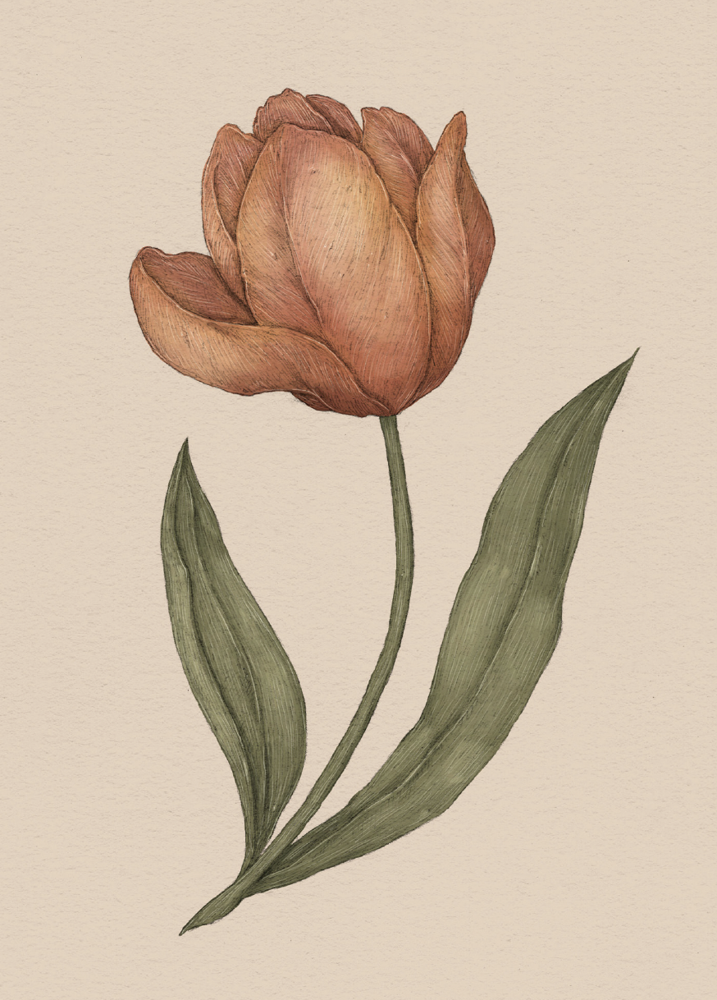

Plate TULIP
The Language of Flowers
Tulip Study

Tulip
Tulipa
Definition: A flower associated in floriography with declaring love.
Meaning
I declare my love for you
Origin
A Turkish legend tells of two lovers, Ferhad and Shirin, who long to be together, but whose love is
forbidden. When Ferhad hears a rumor that Shirin has taken her own life, he kills himself in order to
be with her for eternity. Tulips, symbols of his devotion, spring up where his blood is spilled.
Pair With
- Buttercup to indicate affection for a charming new love
- Ivy as a gift for a newly engaged couple